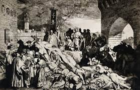

The Black Death was a bubonic plague pandemic occurring in Europe from 1346 to 1353.
One of the most fatal pandemics in human history, as many as 50 million people perished, perhaps 50% of Europe's 14th century population. Bubonic plague is caused by the bacterium Yersinia pestis and spread by fleas.
The origin of the Black Death is disputed. Genetic analysis points to the evolution of Yersinia pestis in the Tian Shan mountains on the border between Kyrgyzstan and China 2,600 years ago. The immediate territorial origins of the Black Death and its outbreak remain unclear, with some evidence pointing towards Central Asia, China, the Middle East, and Europe. The pandemic was reportedly first introduced to Europe during the siege of the Genoese trading port of Kaffa in Crimea by the Golden Horde army of Jani Beg in 1347. From Crimea, it was most likely carried by fleas living on the black rats that travelled on Genoese ships, spreading through the Mediterranean Basin and reaching North Africa, Western Asia, and the rest of Europe via Constantinople, Sicily, and the Italian Peninsula. There is evidence that once it came ashore, the Black Death mainly spread from person-to-person as pneumonic plague, thus explaining the quick inland spread of the epidemic, which was faster than would be expected if the primary vector was rat fleas causing bubonic plague. In 2022, it was discovered that there was a sudden surge of deaths in what is today Kyrgyzstan from the Black Death in the late 1330s; when combined with genetic evidence, this implies that the initial spread may not have been due to Mongol conquests in the 14th century, as previously speculated.
European writers contemporary with the plague described the disease in Latin as pestis or pestilentia, 'pestilence'; epidemia, 'epidemic'; mortalitas, 'mortality'.[18] In English prior to the 18th century, the event was called the "pestilence" or "great pestilence", "the plague" or the "great death".[18][19][20] Subsequent to the pandemic "the furste moreyn" (first murrain) or "first pestilence" was applied, to distinguish the mid-14th century phenomenon from other infectious diseases and epidemics of plague.[18] The 1347 pandemic plague was not referred to specifically as "black" in the time of occurrence in any European language, though the expression "black death" had occasionally been applied to fatal disease beforehand.[18] "Black death" was not used to describe the plague pandemic in English until the 1750s; the term is first attested in 1755, where it translated Danish: den sorte død, lit. 'the black death'.[18][21] This expression as a proper name for the pandemic had been popularized by Swedish and Danish chroniclers in the 15th and early 16th centuries, and in the 16th and 17th centuries was transferred to other languages as a calque: Icelandic: svarti dauði, German: der schwarze Tod, and French: la mort noire.[22][23] Previously, most European languages had named the pandemic a variant or calque of the Latin: magna mortalitas, lit. 'Great Death'.[18] The phrase 'black death' – describing Death as black – is very old. Homer used it in the Odyssey to describe the monstrous Scylla, with her mouths "full of black Death" (Ancient Greek: πλεῖοι μέλανος Θανάτοιο, romanized: pleîoi mélanos Thanátoio).[24][22] Seneca the Younger may have been the first to describe an epidemic as 'black death', (Latin: mors atra) but only in reference to the acute lethality and dark prognosis of disease.[25][22][18] The 12th–13th century French physician Gilles de Corbeil had already used atra mors to refer to a "pestilential fever" (febris pestilentialis) in his work On the Signs and Symptoms of Diseases (De signis et symptomatibus aegritudium).[22][26] The phrase mors nigra, 'black death', was used in 1350 by Simon de Covino (or Couvin), a Belgian astronomer, in his poem "On the Judgement of the Sun at a Feast of Saturn" (De judicio Solis in convivio Saturni), which attributes the plague to an astrological conjunction of Jupiter and Saturn.[27] His use of the phrase is not connected unambiguously with the plague pandemic of 1347 and appears to refer to the fatal outcome of disease.[18]